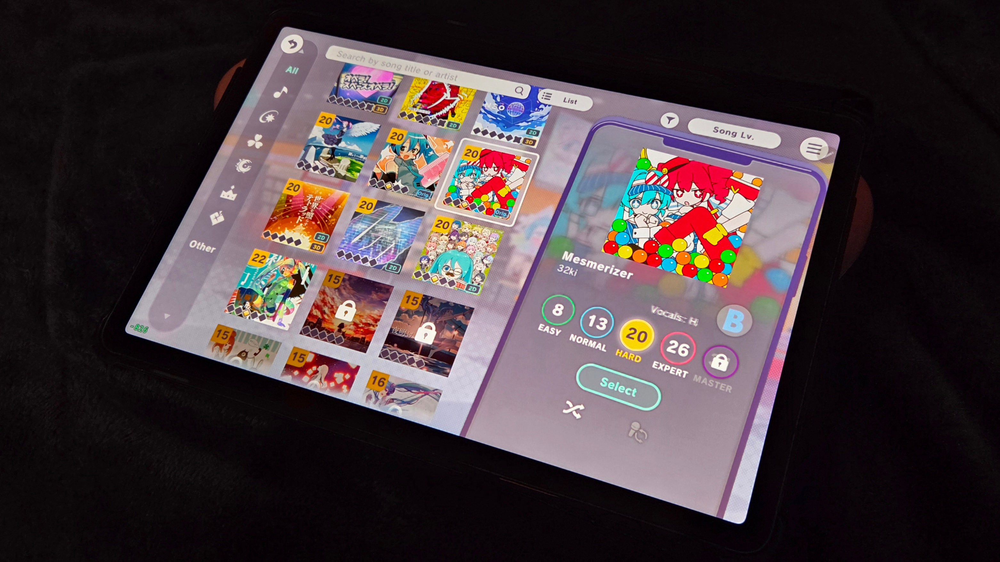

Mesmerizer
< Scratchpad < Go Home
What is a Mesmerizer?
Mesmerizer (also known as メズマライザー) is a song sung by Hatsune Miku and Kasane Teto, created by 32ki
Many rhythm games cut this song down, so I got curious and decided to figure out which games cut it down, and which games keep the original song intact.
Games That Don't Shorten the Song
Temporary placeholders until I go back to the arcade.
Games That Do Shorten the Song
Temporary placeholders until I go back to the arcade.

Taiko no Tatsujin

Project Sekai
To Be Determined
Temporary placeholders until I go back to the arcade.
Beatmania